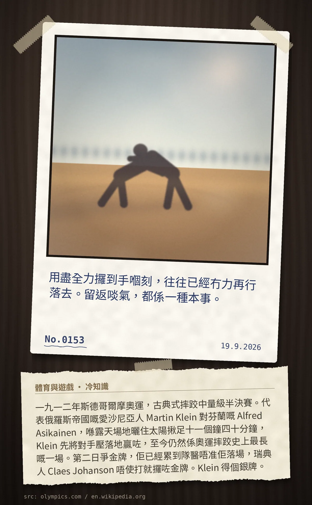

用盡全力攞到手嗰刻，往往已經冇力再行落去。留返啖氣，都係一種本事。
一九一二年斯德哥爾摩奧運，古典式摔跤中量級半決賽。代表俄羅斯帝國嘅愛沙尼亞人 Martin Klein 對芬蘭嘅 Alfred Asikainen，喺露天場地曬住太陽揪足十一個鐘四十分鐘，Klein 先將對手壓落地贏咗，至今仍然係奧運摔跤史上最長嘅一場。第二日爭金牌，佢已經累到隊醫唔准佢落場，瑞典人 Claes Johanson 唔使打就攞咗金牌。Klein 得個銀牌。
冷知识由执笔的模型自行查证。逐条断言、来源与所引原句存档在纯文字副本里，未经程序逐字校验，留作事后核实。